Junk Flea

- Platform:Halo Infinite Forge
- Genre:FPS, Gun Game
- Solo Project
Similarly to the previous project, "Overdose", Junk Flea was also a recreation of a map originating from Combat Arms. This was also developed within Halo Infinite's Forge tool over the course of over 400 hours shortly after the tool's release. The process for this level was slightly different, rather than "eyeballing" it off of Youtube videos, I resorted to seeking out shady tools to rip the original map files out of Combat Arms. Once the original map files were acquired, I brought them into Blender to use as reference for measurements and positioning. Once again however, the level was entirely created with primitive shapes and stock Halo Infinite assets. The majority of props are actually primitive groups.
In this release I also introduced Gun Game to Halo Infinite - a script set which keeps track of a player's scoring on kill to change their weapon according to the corresponding index within a weapon list. The scripting is included within the last section of this article.
Gameplay
Junk Flea's primary game modes are standard types of Free for All & Team Deathmatch. Each team spawns within their own buildings at the beginning, and then eventually follows a dynamic spawn system across the map depending on threat proximity during the match. A night version was planned specifically for Quarantine (Infection) however due to a lack of specific nodes within Forge's script system, I had decided to put the night version on hold.
With the introduction of my Gun Game game mode/scripts alongside the map, an alternative version supporting it was also released. It follows the standard Gun Game ruleset; You gain a level upon killing opponents with your intended weapon and lose a level through being melee'd or self-inflicted death. Ammo can be replenished by killing an opponent with melee. The script system allows anyone to modify their own version in Forge simply by modifying the weapon list. Since the script is fully data-driven, score and all other settings automatically adjust to fit. Once a player cycles through all available weapons, they win the round.
Gallery
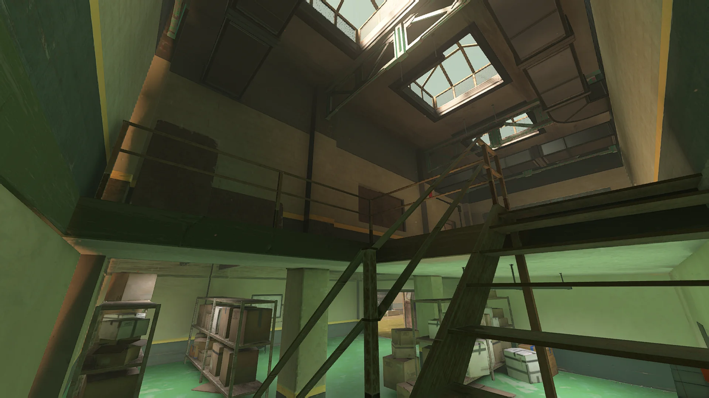
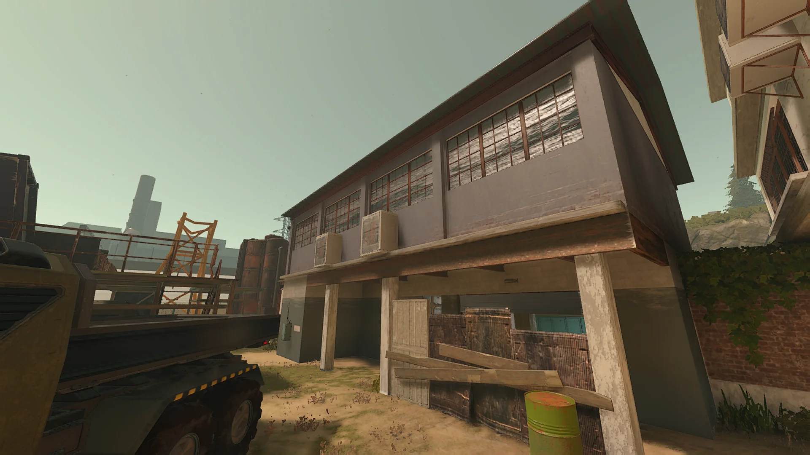
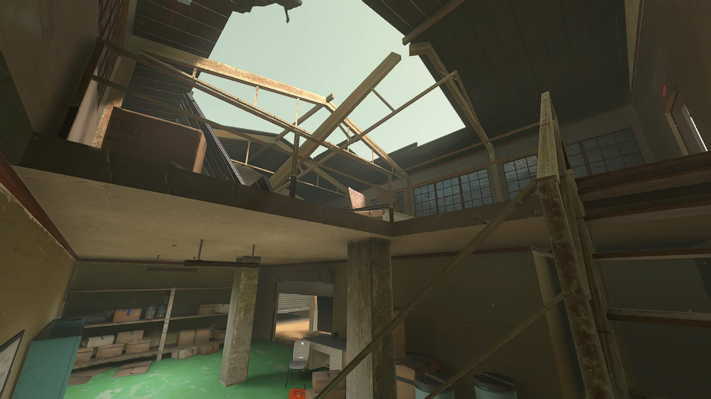
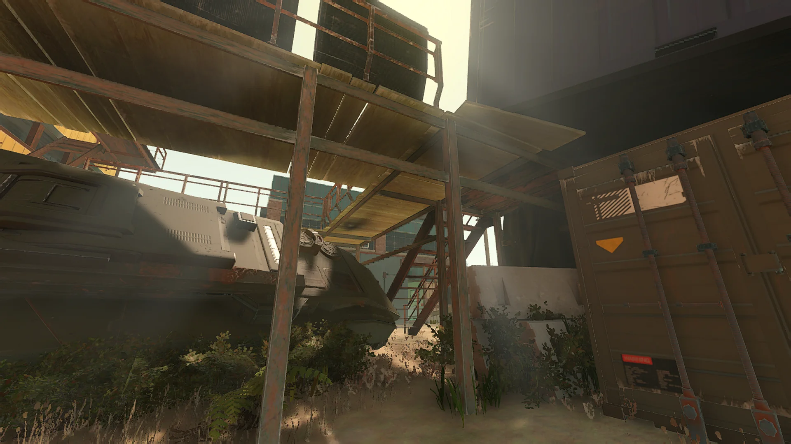
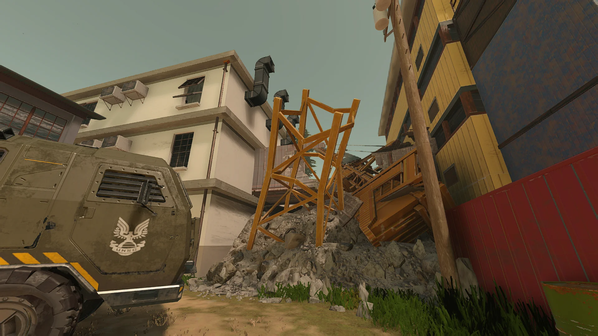
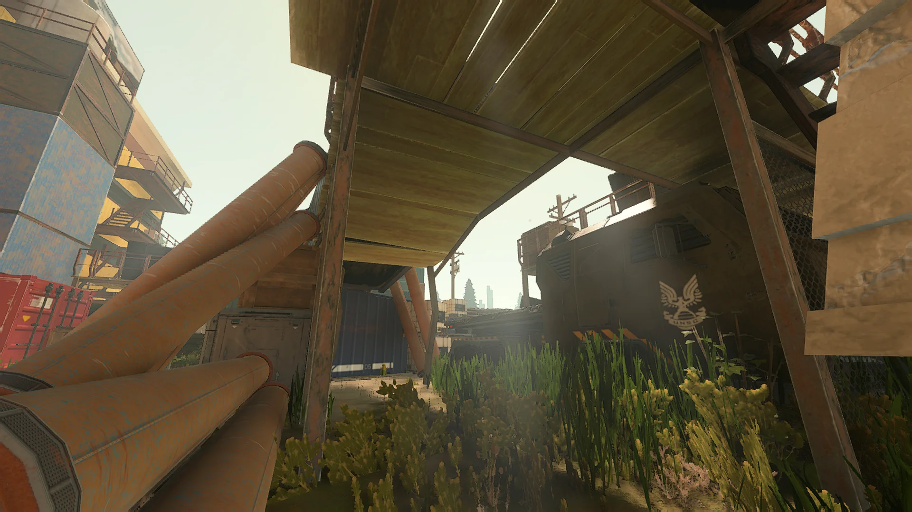
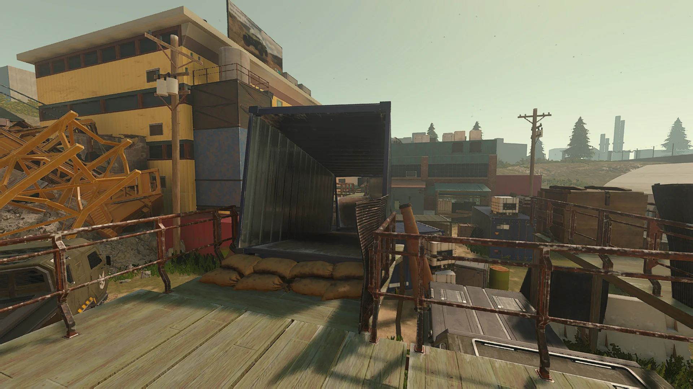
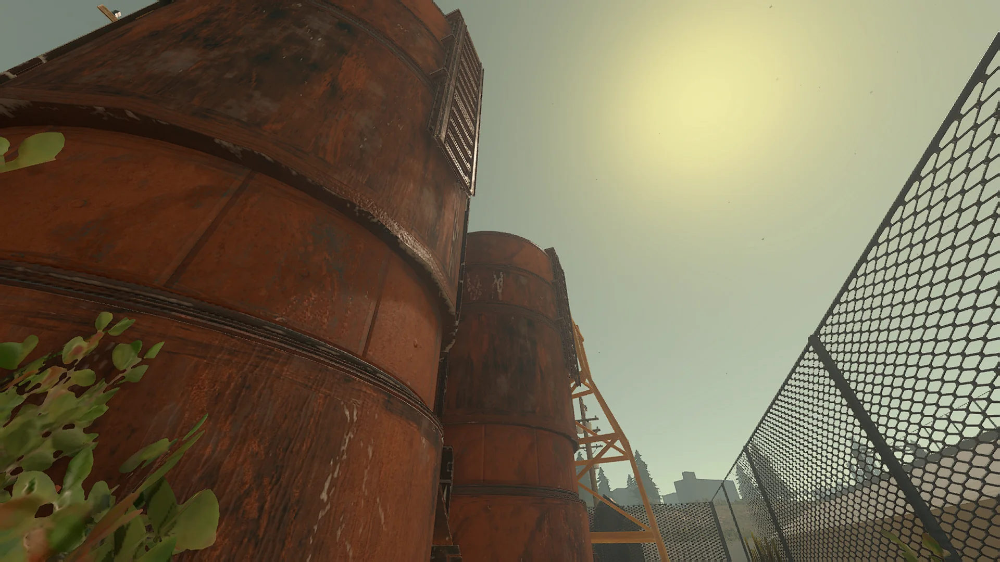
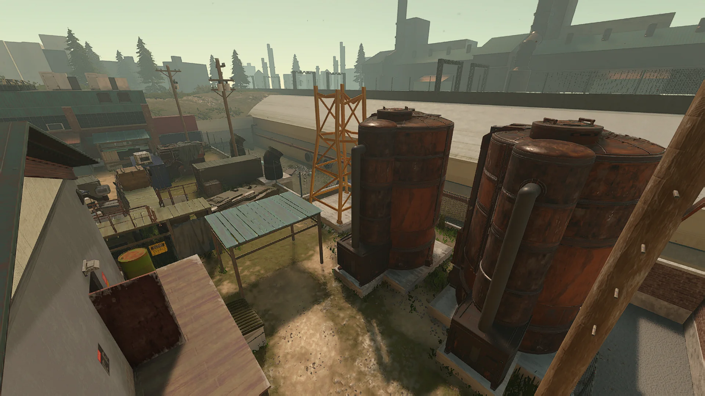
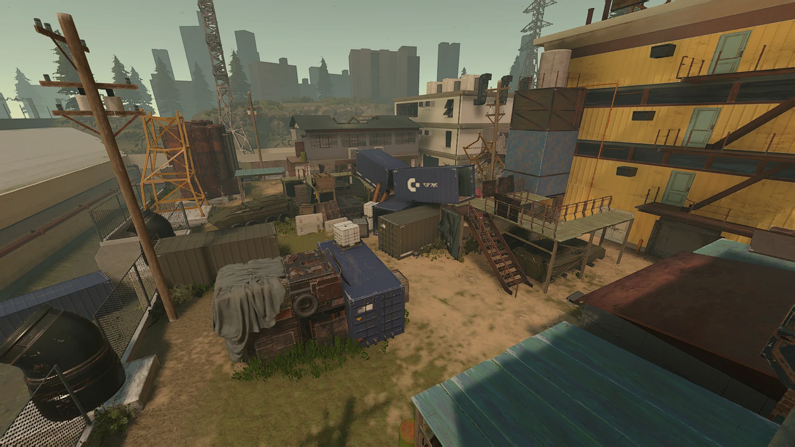
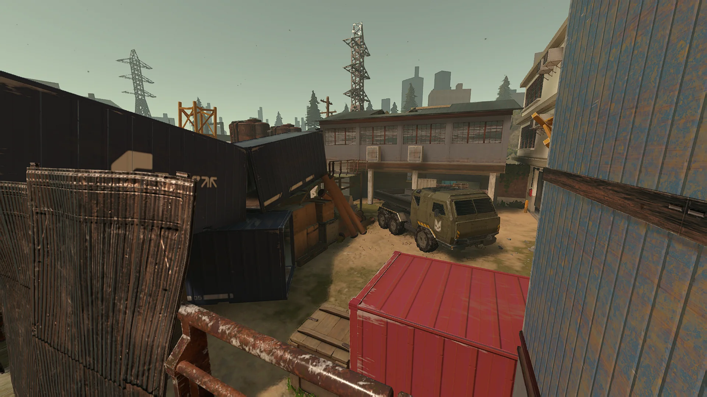
Scripting
Not specific to Junk Flea, but since it was developed alongside it I decided to include the Gun Game script written for its first implementation. This prefab can be imported into any map to turn them into a Gun Game FFA compatible map made specifically for its custom game mode I created. Weapon lists, level up, kill confirmation, scoring etc all handled by the script prefab.